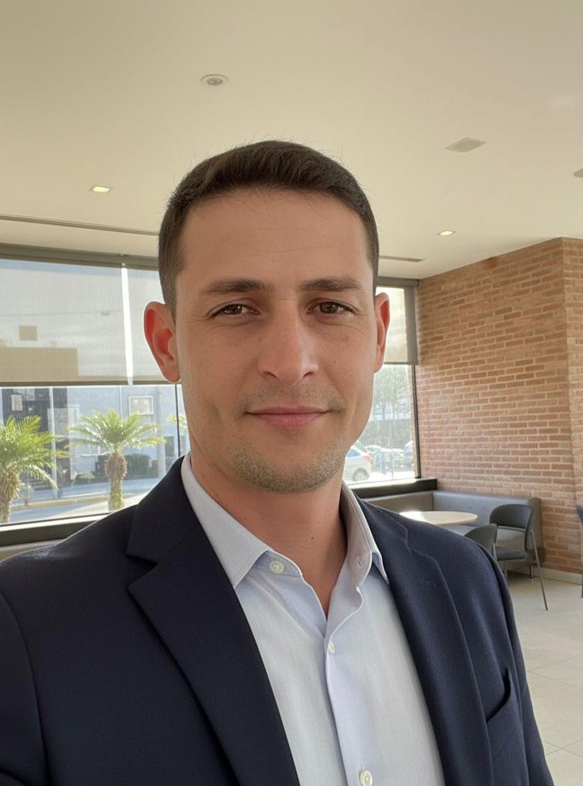

Nossa Equipe

Giovanna Souza

Murilo Carriel

Andrew Andrade
João Pedro Morais

Ana Júlia Bulhoes
Na Doce Dourado, acreditamos que cada mordida deve ser uma experiência única de carinho e sabor. Somos especializados na produção de pães de mel artesanais, recheados com o melhor doce de leite mineiro, que trazem a autêntica sensação de estar em Minas em cada pedaço. Fundada em 2025, nossa empresa nasceu com a missão de espalhar amor e tradição, levando a doçura de Minas Gerais para cada mesa e criando momentos inesquecíveis.
Missão
Levar alegria e afeto através de doces artesanais, com foco em ingredientes naturais e preparo dedicado.
Visão
Tornar-se a marca de Pão de Mel mais querida e reconhecida pela qualidade no mercado regional até 2028.
Valores
Qualidade, Artesanato, Respeito ao Cliente e Sustentabilidade.